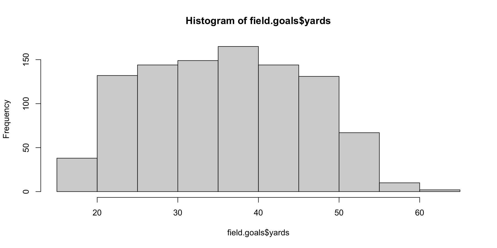
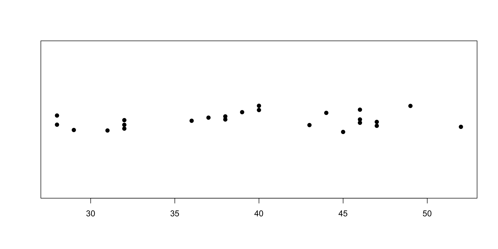

[1] 6[1] 7[1] 9第三章：R 快速入門
實踐大學
2026-06-08
本章是 R 的實戰導覽，範例滿滿。最好的學法是打開 R、跟著打：
3 + 4，你就試試 3 - 4）；讀完本章，課程的每個重要概念你都會摸過一遍：向量、函式、變數、資料結構、類別、模型、圖表與說明系統。
在主控台輸入運算式、按 Enter，R 會求值並印出結果（如果有的話）。簡單的數學運算完全符合預期，包括運算優先序與括號：
互動式直譯器會自動把運算式回傳的物件印出來——所以你不必開口，答案就出現了。
[1]：一切皆向量為什麼每個答案都以 [1] 開頭？因為你輸入的任何數字都是向量——一列有順序的數。方括號裡的數字是該行顯示的第一個元素的索引。上面每個結果都是只有一個元素的向量，所以是 [1]。
較長的向量用 c(...) 函式建立（c 代表 combine，合併）：
序列運算子 : 產生連續整數——正好用來觀察輸出換行時的行首標記：
[1] 1 2 3 4 5 6 7 8 9 10 11 12 13 14 15 16 17 18 19 20 21 22 23 24 25
[26] 26 27 28 29 30 31 32 33 34 35 36 37 38 39 40 41 42 43 44 45 46 47 48 49 50每一行都以該行第一個元素的索引開頭（如 [23]、[45]），任何元素的位置一眼可知。
兩個向量做運算時，R 會逐元素配對，回傳新向量：
[1] 11 22 33 44[1] 10 40 90 160[1] 0 1 2 3這是 R 最具代表性的習性：你很少逐元素寫迴圈——而是一次對整個向量操作。
兩向量長度不同時，R 會回收（recycle）較短者，重複使用直到補滿：
[1] 2 3 4 5[1] 1.0000000 0.5000000 0.3333333 0.2500000 0.2000000[1] 11 102 13 104Warning in c(1, 2, 3, 4, 5) + c(10, 100): longer object length is not a
multiple of shorter object length[1] 11 102 13 104 15Warning
注意警告訊息。 若長向量的長度不是短向量的整數倍，R 仍會算出答案，但會發出警告——這通常代表你的程式有錯。
運算式也能處理文字：
[1] "Hello world."[1] "Hello world" "Hello R interpreter"一行中井字號（#）之後的任何內容都會被忽略——就算插在運算式中間也行：
請大方地寫註解：你程式碼最常見的讀者是未來的自己。
R 裡真正做事的是函式（function）——跟數學課學的一樣。多數呼叫的形式是 f(引數1, 引數2, ...)：
這幾個都只收一個引數。許多函式需要多個。
引數可以指名傳入，也可以按預設順序傳入而省略名字：
兩種寫法完全等價。當函式參數很多、你只想設定其中幾個時，具名引數特別好用。
不是所有函式都長成 f(...)。有些以運算子的面貌出現：
+ 是普通加法；^ 是次方（注意：不滿足交換律）；== 檢驗相等，回傳布林值（TRUE／FALSE）——沒錯，R 有邏輯資料型別。x <- 1，唸作「x gets 1」R 讓你把名字綁到值上。指派運算子是 <-，慣稱 「gets」——跟演算法虛擬碼的寫法如出一轍：
值的代換發生在指派的那一刻，不是之後評估變數時。建好 z 再改 y，z 紋風不動：
變數求值的細節（環境、惰性求值）留到第八章。
R 提供多種方式取用向量的成員：
[1] 7[1] 1 2 3 4 5 6[1] 1 6 11[1] 8 4 9索引向量可以是任何整數向量——連續、跳號、甚至亂序。
也可以用一串 TRUE／FALSE 挑選元素。例：只留 3 的倍數，即除以 3 餘 0 的元素：
[1] FALSE FALSE TRUE FALSE FALSE TRUE FALSE FALSE TRUE FALSE FALSE TRUE[1] 3 6 9 12這種依條件篩選的寫法是 R 資料分析的主力——你會天天用到。
= 也能指派，由左到右，跟多數語言相同。想用就用——但教科書（與本講義）為了易讀仍堅持 <-。千萬別把 =（指派）跟 ==（相等檢驗）搞混：[1] 2[1] FALSE-> 向右指派——打完一長串運算式才想起忘了存的時候，偶爾很方便：Warning
在函式呼叫裡寫 f(x <- 3)，會先在你的工作空間指派 x、再把值傳進去——幾乎不會是你要的。傳引數請用 =：f(x = 3)。
函式只是綁了符號的另一種物件。自己定義一個，就能像內建函式一樣呼叫：
接著是個好用的小技巧：只打名字（不加括號）會印出函式的原始碼：
多數內建函式也適用——R 從裡到外都是開源的。
陣列（array）是多維度的向量。內部儲存方式跟向量完全相同——陣列只是掛上維度屬性的向量——但顯示與索引方式不同：
[,1] [,2] [,3] [,4]
[1,] 1 4 7 10
[2,] 2 5 8 11
[3,] 3 6 9 12[1] 5對照同樣內容的普通向量：
矩陣（matrix）就是二維陣列：
[,1] [,2] [,3] [,4]
[1,] 1 4 7 10
[2,] 2 5 8 11
[3,] 3 6 9 12陣列可以超過二維：
（完整印出 w 時，會顯示成標為 , , 1 與 , , 2 的兩片 3×3 切片。）
R 取用陣列局部的語法很乾淨：每個維度一個索引、以逗號分隔——省略索引就代表該維度全取：
到目前為止的結構都只裝單一型別。串列（list）可容納異質的物件集合，成員可以命名——跟其他語言的「list」有微妙差異：
成員可依名稱或位置取用——注意三種寫法的差別：
串列甚至可以包含其他串列：
[[1]]
[1] "this list references another list"
[[2]]
[[2]]$thing
[1] "hat"
[[2]]$size
[1] "8.25"這種巢狀能力讓 R 能表示任意複雜的物件——例如配適好的模型，本質上就是一個龐大的巢狀串列。
資料框（data frame）是一個由等長具名向量組成的串列——想成試算表或資料庫表格即可，特別適合存放實驗資料。書中範例：2008 年國家聯盟東區的勝敗紀錄：
欄位用 $ 運算子取得（跟串列成員一樣）：
想找特定值——比如佛羅里達馬林魚（FLA）的敗場數——先建邏輯向量，再拿它當篩子：
第十一章會示範如何從檔案與資料庫匯入資料框；除了串列，R 還透過 S4 物件提供正式的類別定義來容納異質資料。
R 是物件導向語言：每個物件都有型別，也都屬於某個類別（class）。我們已經遇過好幾種——用 class() 查詢：
[1] "character"[1] "numeric"[1] "data.frame"[1] "function"注意最後一行：函式是類別為 function 的物件。
例：+ 是泛型的。它能加數字，也知道怎麼處理「日期加數字」：
print 呼叫你在主控台評估運算式時，直譯器其實默默對結果呼叫了泛型函式 print：
print 方法，就能控制該類別物件的顯示方式。print 把圖畫出來的。在函式或腳本裡呼叫 lattice 函式，不明確 print 就什麼都不會出現——經典陷阱。物件在第七章深入討論；類別在第十章。
對統計學家而言，模型是對一組資料的精簡描述，通常以數學式表達。兩種典型目標：
假設以線性模型用 \(x_1, x_2, \ldots, x_n\) 預測 \(y\)（統計學稱 \(y\) 為因變數、\(x_i\) 為自變數）：
\[y = c_0 + c_1 x_1 + c_2 x_2 + \cdots + c_n x_n + \varepsilon\]
R 把這個關係寫成 y ~ x1 + x2 + ... + xn——一個公式（formula）物件。
lmcars 資料集（隨基本套件附贈，1920 年代收集）記錄汽車速度與煞停距離。假設煞停距離是速度的線性函數；公式是 dist ~ speed，用 lm 估計參數：
Call:
lm(formula = dist ~ speed, data = cars)
Coefficients:
(Intercept) speed
-17.579 3.932 印出 lm 物件會顯示原始呼叫（看得到資料與公式）和估得的係數。
summary
Call:
lm(formula = dist ~ speed, data = cars)
Residuals:
Min 1Q Median 3Q Max
-29.069 -9.525 -2.272 9.215 43.201
Coefficients:
Estimate Std. Error t value Pr(>|t|)
(Intercept) -17.5791 6.7584 -2.601 0.0123 *
speed 3.9324 0.4155 9.464 1.49e-12 ***
---
Signif. codes: 0 '***' 0.001 '**' 0.01 '*' 0.05 '.' 0.1 ' ' 1
Residual standard error: 15.38 on 48 degrees of freedom
Multiple R-squared: 0.6511, Adjusted R-squared: 0.6438
F-statistic: 89.57 on 1 and 48 DF, p-value: 1.49e-12摘要報表包含：呼叫式、殘差分布、係數表（估計值、標準誤、\(t\) 值、\(p\) 值），以及配適統計量（\(R^2\)、\(F\) 統計量）。
你也可以一口氣配適加檢視、不存模型：
方便歸方便——但把模型命名通常更明智：
R 內建多套視覺化系統：graphics（經典的基礎系統）、grid 與 lattice——書中年代以 graphics 和 lattice 最常用（現今則由第十五章的 ggplot2 稱霸）。
為了更有趣，書中用真實資料：2005 年 NFL 美式足球的所有射門（field goal）嘗試。（射門：把球踢進門柱之間得 3 分；失敗則球權在起踢點交給對方。）
書中以 library(nutshell) 載入資料；該套件已下架 CRAN，本課程改從 CRAN 的 GitHub 鏡像抓同一份資料：
[1] "home.team" "week" "qtr" "away.team" "offense"
[6] "defense" "play.type" "player" "yards" "stadium.type"names() 列出欄位：主客隊、週次、節數、進攻方、防守方、攻防型態、碼數、球場類型、球員。
hist 函式一行就畫出分布：

（你的顏色可能跟書上不同——作者為了印刷調整過繪圖參數。）
breaks想看清不同距離的細節，用 breaks 引數增加組距數：
一個引數就讓畫面改頭換面——基礎繪圖的典型風格：預設值合理、旋鈕無數。
有多少次射門被攔阻？table 函式統計類別變數：
帶狀圖（strip chart）沿一條軸線替每筆觀測畫一點。先篩出被攔阻的射門，加一點抖動（jitter）避免重疊，再用 pch 改變點的樣式：

carscars 資料集有 50 筆速度與煞停距離的觀測：
[1] 50 2[1] "speed" "dist" speed dist
Min. : 4.0 Min. : 2.00
1st Qu.:12.0 1st Qu.: 26.00
Median :15.0 Median : 36.00
Mean :15.4 Mean : 42.98
3rd Qu.:19.0 3rd Qu.: 56.00
Max. :25.0 Max. :120.00 畫出兩者的關係，並加上座標軸標籤：
一眼可見：煞停距離大致與速度成正比。
Lattice 擅長比較不同組別。它預設不載入——呼叫前必須先：
範例資料：1980–2005 年美國飲食消費，存於 consumption 資料集（48 筆觀測：消費量 Amount、食物類別 Food、年份 Year，每 5 年一筆）。
兩欄是數值（Amount、Year）；另外兩欄是新型別：因子（factor）——R 對類別值的精簡表示法，以 factor() 建立，是建模函式的核心配角。
我們想看 Amount 對 Year 的變化，並對每個 Food 分開畫——lattice 用公式 Amount ~ Year | Food 表達這件事：
書中作者覺得預設圖不好讀（標籤太大、各面板共用刻度、堆疊彆扭），調了兩個選項：
aspect 調整面板長寬比，使變化盡量呈 45° 角（最易察覺）；scales 控制座標軸——"sliced" 讓每個面板使用自己的一段刻度。第十四章完整介紹 lattice。
R 為每個已安裝套件的每個函式都附了文件：
忘了函式叫什麼？用主題搜尋：
想看整個套件的文件，library 的 help 選項比單頁說明更完整：
有些套件——尤其來自 Bioconductor 的——附有 vignette：帶著範例、手把手介紹套件用法的短文。
Tip
現在就養成的習慣： 函式行為出乎意料時，先讀 ?fun 再上網搜尋——R 的內建文件品質出奇地好，而且範例真的能跑。
版權。 本講義改編自 Joseph Adler 著、O’Reilly Media 出版之 R in a Nutshell: A Desktop Quick Reference（第二版）。原著作者與出版社保留一切權利。
僅限非商業用途。 本教材僅供教學使用，不得用於商業營利。
標示出處。 任何重製、散布或使用本教材，皆須妥善標註原始出處。

R in a Nutshell: A Desktop Quick Reference